# Total translatome occupancy
obj <- get_occupancy(object = obj,
serp_exp = "total",
gene_name = "CCT3",
coordinate_to_trans = T,
do_reads_offset = T)
# check
head(obj@total_occupancy)
# # A tibble: 6 × 7
# sample sample_group rname pos count rpm smooth
# <chr> <chr> <chr> <dbl> <int> <dbl> <dbl>
# 1 ssb1_rep1 ssb1 YJL014W_mRNA|CCT3 -14 2 0.0515 0.0515
# 2 ssb1_rep1 ssb1 YJL014W_mRNA|CCT3 -13 1 0.0258 0.0258
# 3 ssb1_rep1 ssb1 YJL014W_mRNA|CCT3 5 1 0.0258 0.0258
# 4 ssb1_rep1 ssb1 YJL014W_mRNA|CCT3 8 1 0.0258 0.0258
# 5 ssb1_rep1 ssb1 YJL014W_mRNA|CCT3 9 1 0.0258 0.0258
# 6 ssb1_rep1 ssb1 YJL014W_mRNA|CCT3 12 1 0.0258 0.0258
# IP translatome occupancy
obj <- get_occupancy(object = obj,
serp_exp = "ip",
gene_name = "CCT3",
coordinate_to_trans = T,
do_reads_offset = T)
# check
head(obj@ip_occupancy)
# # A tibble: 6 × 7
# sample sample_group rname pos count rpm smooth
# <chr> <chr> <chr> <dbl> <int> <dbl> <dbl>
# 1 ssb1_rep1 ssb1 YJL014W_mRNA|CCT3 -14 4 0.111 0.111
# 2 ssb1_rep1 ssb1 YJL014W_mRNA|CCT3 -13 1 0.0277 0.0277
# 3 ssb1_rep1 ssb1 YJL014W_mRNA|CCT3 6 1 0.0277 0.0277
# 4 ssb1_rep1 ssb1 YJL014W_mRNA|CCT3 10 2 0.0554 0.0554
# 5 ssb1_rep1 ssb1 YJL014W_mRNA|CCT3 20 1 0.0277 0.0277
# 6 ssb1_rep1 ssb1 YJL014W_mRNA|CCT3 21 4 0.111 0.111 Enrichment analysis
Introduction
The enrichment analysis aims to identify potential co-translation events, similar to the strategy employed by Ayala Shiber et al. in their study of ribosome-associated interactions. This approach allows us to detect transcripts that are preferentially enriched in immunoprecipitated ribosome fractions, potentially indicating co-translational binding or complex assembly occurring during translation.
To perform this analysis, two input datasets are required:
Total Translatome File — This file represents the global translation profile, typically obtained through ribosome profiling of whole-cell lysates. It serves as a reference or background against which enrichment can be measured.
IP Translatome File — This file contains translation data derived from immunoprecipitated (IP) ribosome complexes, often obtained via affinity purification techniques targeting proteins of interest. This dataset reflects transcripts that are associated with the protein or complex under investigation.
By comparing the read coverage at each nucleotide across open reading frames (ORFs) between the total and IP translatome datasets, EA quantifies the relative enrichment of transcripts in the IP sample. This ratio-based enrichment can reveal specific mRNAs that are co-translationally associated with the IP target, pointing to possible physical interactions or functional coupling at the level of translation.
1. Gene-Level Enrichment
The gene-level enrichment is defined as the ratio of normalized ribosome profiling (Ribo-seq) reads in the immunoprecipitated (IP) sample to those in the total translatome sample, for the entire open reading frame (ORF) of a given gene. This provides a summary measure of how much a given transcript is enriched in the IP fraction relative to the background.
The formula is as follows:
\[ \text{Enrichment}_{\text{gene}} = \frac{\text{RPM}_{\text{IP (total ORF)}}}{\text{RPM}_{\text{Total (total ORF)}}} \]
Where:
- RPM: Reads per million mapped reads
- IP: The immunoprecipitation (experiment) sample
- Total: The input control sample (total translatome)
Alternatively, we can use the total Ribo-seq data as a control group and apply differential expression analysis tools such as DESeq2 or edgeR to identify genes significantly enriched in the IP Ribo-seq data.
2. Nucleotide-Level Enrichment
For nucleotide-level enrichment, enrichment ratios are calculated at each nucleotide position (typically the footprint 5’ end) on the ORF:
\[ \text{Enrichment}_{i} = \frac{\text{RPM}_{\text{IP},i}}{\text{RPM}_{\text{Total},i}} \]
Where ( i ) represents the nucleotide position within the ORF.
Because Ribo-seq data are often sparse at single-nucleotide resolution, we apply a fixed-length sliding window approach (e.g., 45 nucleotides, equivalent to 15 codons). This smooths local variation and improves signal detection.
For each window ( W ) centered at position ( j ), the smoothed enrichment is:
\[ \text{Enrichment}_{W_j} = \frac{\sum_{i \in W_j} \text{RPM}_{\text{IP},i}}{\sum_{i \in W_j} \text{RPM}_{\text{Total},i}} \]
- Window size: 45 nt
- Step size: Typically 1 or more depending on resolution needed
- The window moves along the ORF from 5’ to 3’ end
This positional analysis enables the identification of localized peaks of enrichment that may correspond to co-translational interaction sites (e.g., domain emergence, complex assembly hotspots).
Ribosome density calculation
The get_occupancy function can be used to extract and calculate the ribosome density of genes of interest from a serp object. By leveraging the previously assigned read offset information, it enables accurate correction of read positions to infer the ribosomal A-site locations:
Ribosome density visualization
The trans_plot function is used to visualize the ribosome density profiles from both IP and total Ribo-seq datasets:
trans_plot(object = obj)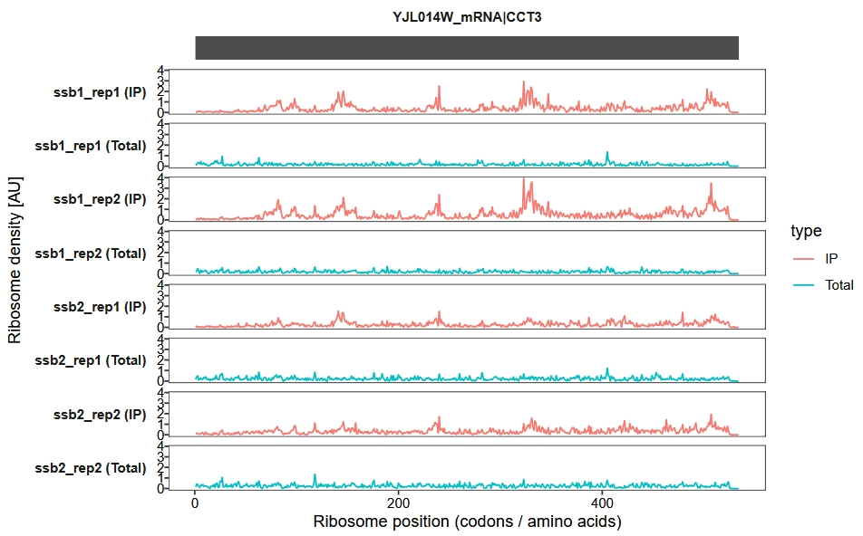
Display UTR regions and set the x-axis units to nucleotides (nt) instead of codons:
trans_plot(object = obj, retain_cds = F, mode = "nt")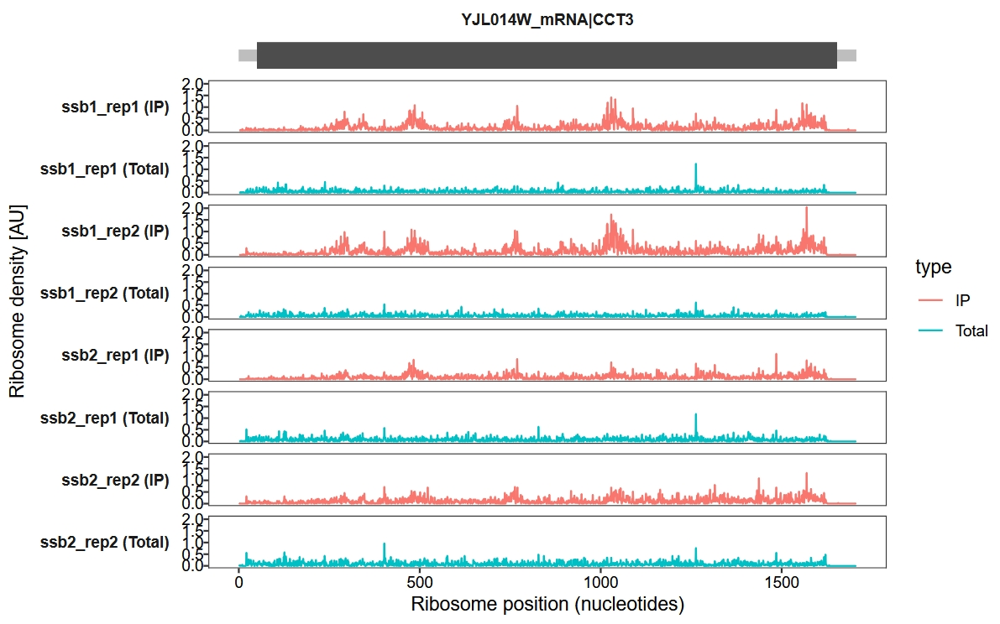
Add a new y-axis range label:
trans_plot(object = obj, new_signal_range = T)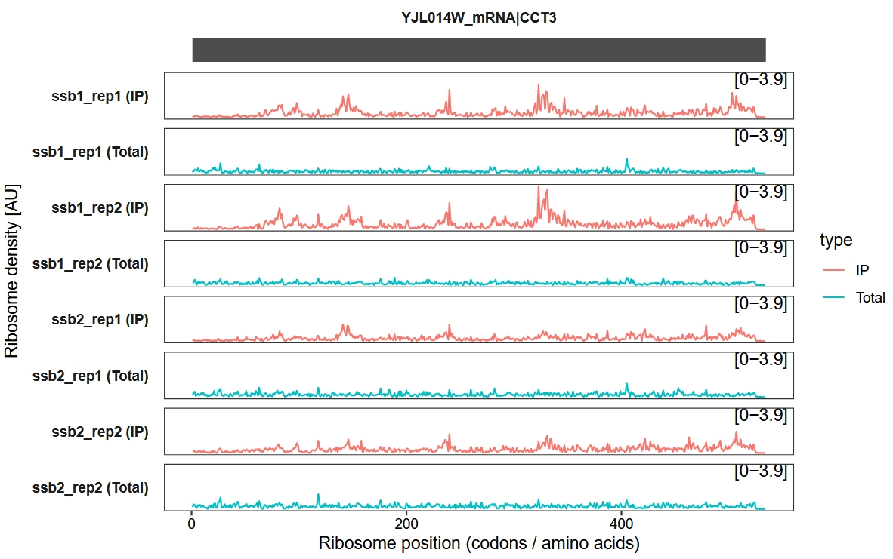
Merge biological replicates, with the shaded area representing the variance among replicates:
trans_plot(object = obj, merge_rep = T)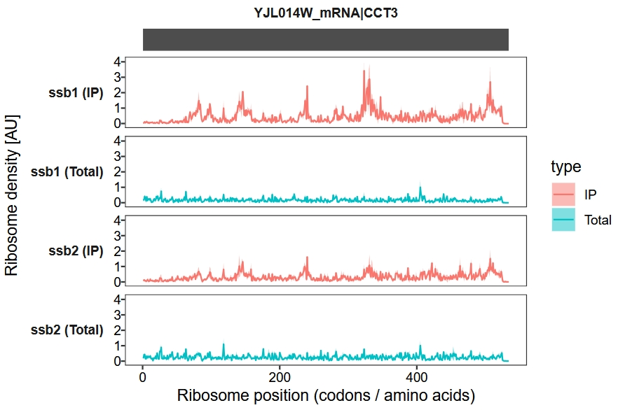
Enrichment visualization
We use a sliding window approach to calculate and visualize the IP-to-total enrichment ratio along the transcript. The enrichment_plot2 function computes the fold enrichment and generates a track plot. In this example, we set the x-axis units to codons and apply a sliding window of 15 codons:
enrichment_plot2(object = obj,
smooth = TRUE,
window_size = 15,
mode = "codon",
merge_rep = F)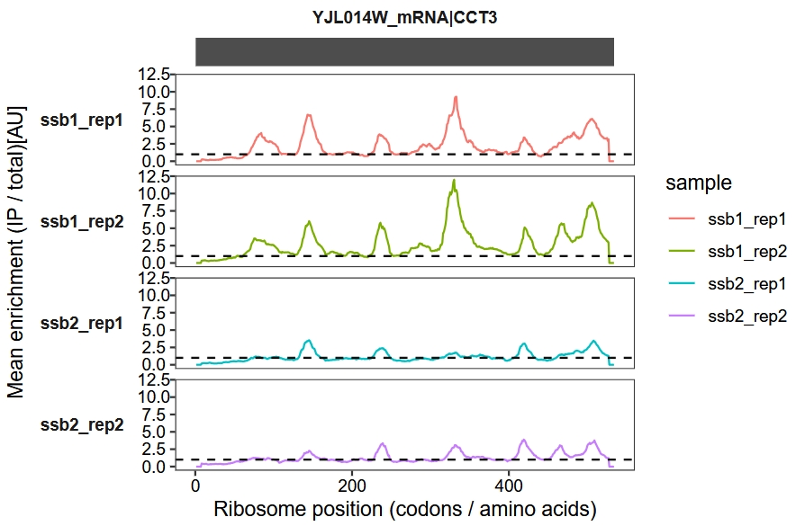
Merge biological replicates:
enrichment_plot2(object = obj,
smooth = TRUE,
window_size = 15,
mode = "codon",
new_signal_range = T,
merge_rep = T)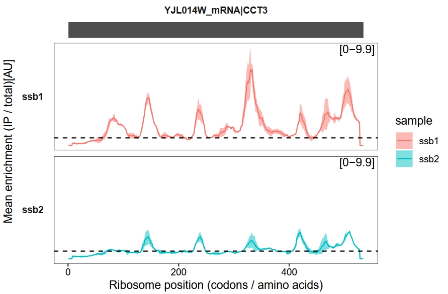
Combine samples in a single plot without faceting:
enrichment_plot2(object = obj,
smooth = TRUE,
window_size = 15,
mode = "codon",
merge_rep = T,
facet = ggplot2::facet_grid(~rname))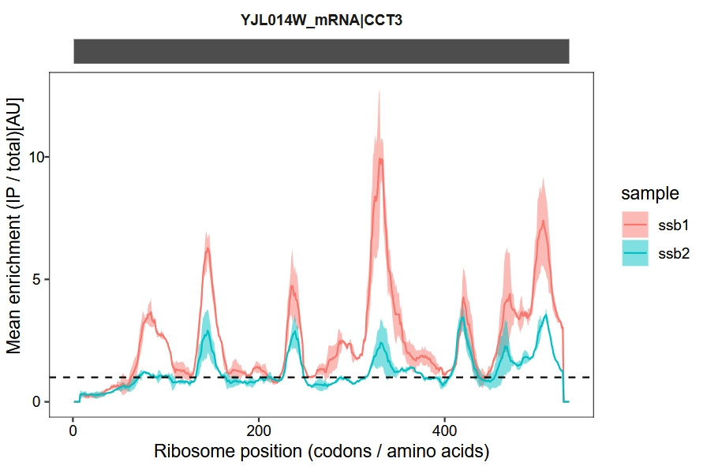
Change the x-axis to nucleotide (nt) positions:
enrichment_plot2(object = obj,
smooth = TRUE,
window_size = 45,
retain_cds = F,
facet = ggplot2::facet_grid(~rname),
mode = "nt")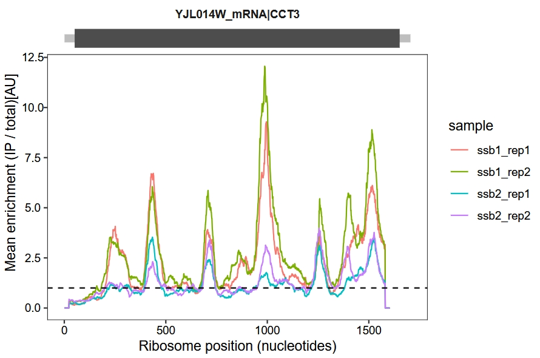
Confidence interval (CI) according to Agresti and Coull
The enrichment_plot1 function calculates a 95% confidence interval (CI) for ( p_i ) using the Agresti-Coull method, as described in paper “Interactions between nascent proteins translated by adjacent ribosomes drive homomer assembly”. This approach provides reliable CIs for proportion data, especially in cases of small sample sizes. The function utilizes sliding windows to smooth the data from IP and Total datasets at each position for each sample.
Agresti-Coull Method Overview
The Agresti-Coull method adjusts the proportion ( p_i ) for more accurate calculation of confidence intervals. Here’s how the method works:
Adjusted Proportion Calculation
The adjusted proportion is defined as:
\[ \tilde{p}_i = \frac{x + z^2 / 2}{n + z^2} \]
where:
- ( x ): Sliding window’s count of IPs (
win_ip), - ( n ): Total count (
win_ip + win_total), - ( z ): Critical value from the standard normal distribution (( z = 1.96 ) for 95% CI).
Confidence Interval Calculation
The 95% confidence interval is then calculated as:
\[ \tilde{p}_i \pm z \sqrt{\frac{\tilde{p}_i(1 - \tilde{p}_i)}{n + z^2}} \]
This adjustment ensures robust confidence intervals even for small samples or sparse data.
Visualization
Default plot:
enrichment_plot1(object = obj,
window_size = 15,
mode = "codon")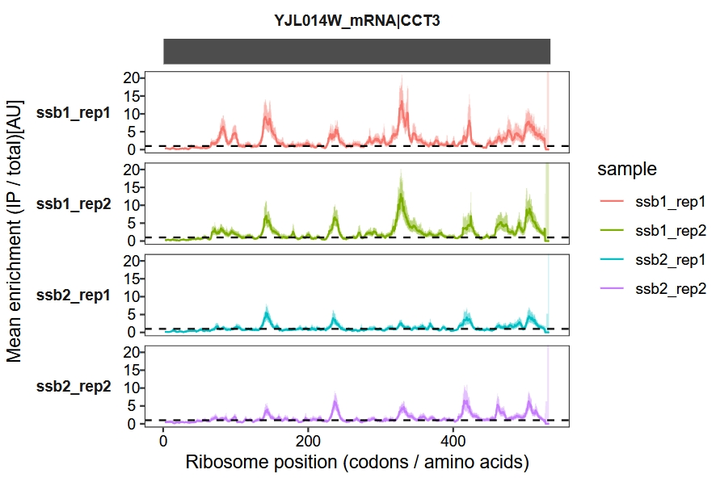
Display enrichment fold-change in log2 scale:
enrichment_plot1(object = obj,
window_size = 15,
mode = "codon",
log2_transform = T)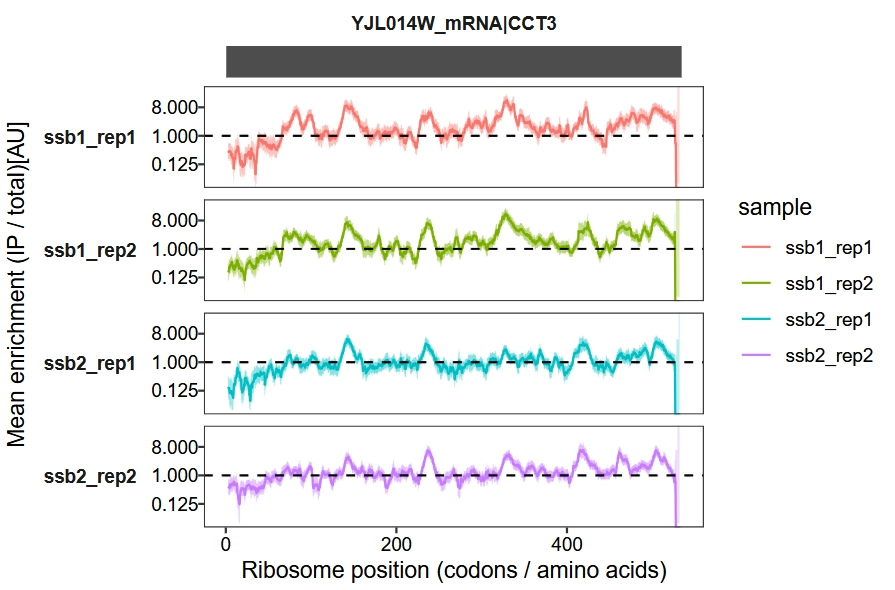
Convert the x-axis unit from codon to nucleotide (nt):
enrichment_plot1(object = obj,
window_size = 45,
mode = "nt")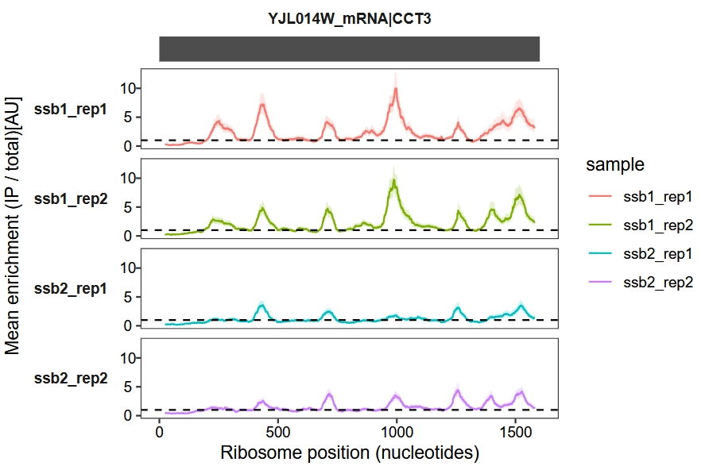
Retain and display the UTR regions:
enrichment_plot1(object = obj,
window_size = 45,
mode = "nt",
retain_cds = F)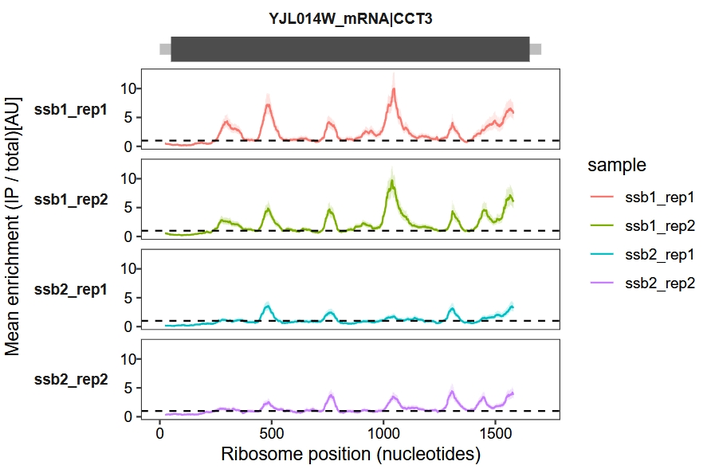
Combine samples for a joint display:
enrichment_plot1(object = obj,
window_size = 15,
mode = "codon",
log2_transform = T,
facet = facet_grid(.~rname,switch = "y"))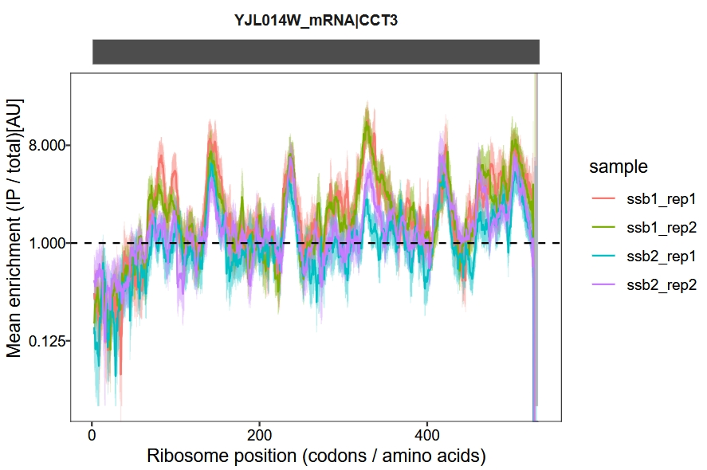
Change sample colors:
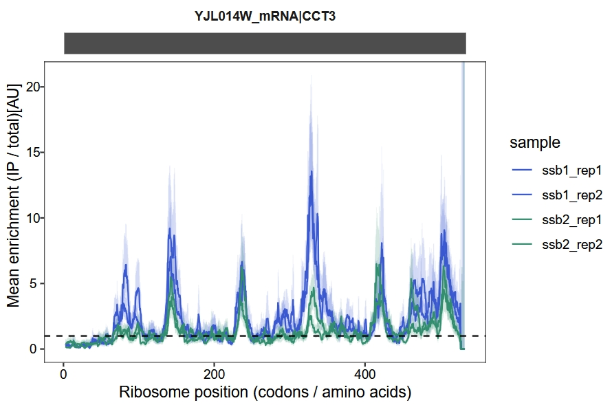